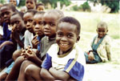
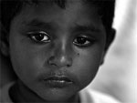
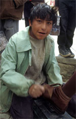
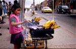
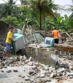
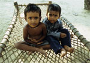
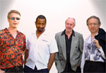
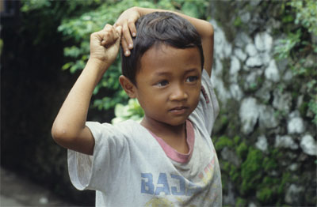
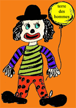

|
Tag des afrikanischen Kindes am 16. Juni
Überleben am Abgrund |
In vielen Ländern Afrikas hat sich die Situation von Kindern in den vergangenen zehn Jahren verschlechtert. Ein besonders tragisches Beispiel ist Simbabwe, wo der wirtschaftliche Niedergang des einstigen "Brotkorb Afrikas" die Lebensbedingungen für Kinder extrem verschärft hat. Darauf wies das entwicklungspolitische Kinderhilfswerk terre des hommes anlässlich des Tags des afrikanischen Kindes hin, der am 16. Juni in vielen Staaten des Kontinents begangen wird. Er erinnert an die brutale Niederschlagung des Protests südafrikanischer Schulkinder in Soweto durch das Apartheidregime im Juni 1976.
Simbabwe steht sechs Jahre nach einer radikalen Landreform, die der auf Agrarprodukten basierenden Wirtschaft den Boden entzogen hat, am Abgrund. Es fehlt an Devisen, um wichtige Güter wie Benzin oder Maschinen zu importieren, die Inflationsrate ist mit inzwischen mehr als 1000 Prozent die höchste der Welt.
Die Folgen der Politik des Mugabe-Regimes sind für einen Großteil der simbabwischen Familien verheerend: "Etwa 80 Prozent der Bevölkerung gelten als arm, zwei von drei Simbabwern haben keine Arbeit. Eltern können die fortwährend steigenden Schulgebühren für ihre Kinder nicht mehr bezahlen, es fehlt am Allernötigsten: Viele Menschen, darunter unzählige Kinder, weisen Spuren starker Unterernährung auf, die medizinische Versorgung verschlechtert sich stetig", erklärte Pressesprecher Wolf-Christian Ramm.
Partnerorganisationen von terre des hommes sind in ihrer Arbeit tagtäglich mit weiteren Auswirkungen konfrontiert: So leben immer mehr Kinder auf der Straße und versuchen, mit Betteln und Stehlen ihr Überleben zu sichern. Tausende tauchen auf den Straßen der Nachbarländer Sambia, Mosambik und Südafrika auf, wo sie zusätzlichen Gefahren ausgesetzt sind: "Ihre Not wird ausgenutzt, um sie als billige Arbeitskräfte auszubeuten, Mädchen sind gezwungen, sich zu prostituieren oder werden gezielt in Bordelle verkauft", so Wolf-Christian Ramm.
Die internationale Staatengemeinschaft darf sich nach Auffassung von terre des hommes nicht heraushalten, wenn Simbabwe als Unterzeichner der UN-Kinderrechtskonvention und der Afrikanischen Kinderschutzcharta das Leid seiner Bevölkerung ignoriert. Ohne entschlossene Schritte wird sich die Situation weiter verschlechtern.
Weitere Informationen:
|
40.000 Kinderprostituierte in Sri Lanka |
In Sri Lanka gibt es momentan nahezu 40.000 Kinderprostituierte und mehr als 100.000 Kinder, die als Haushaltshilfen arbeiten. Dies berichtet der Colombo „Daily Mirror“ und bezieht sich dabei auf Angaben der National Child Protection Agency (NCPA), die ihre Aussagen auf Statistiken des Kinderhilfswerks der Vereinten Nationen UNICEF und die Internationale Arbeitsorganisation ILO stützt.
Die International Labor Organization (ILO) erklärte den 12. Juni zum „Welttag gegen Kinderarbeit“, um das Augenmerk der Weltöffentlichkeit auf das dringende Bedürfnis nach der Abschaffung von Kinderarbeit zu richten.
weiterlesen auf readers-edition.de
|
»Ausbeutung von Kindern alltäglich«
terre des hommes zum Internationalen Tag gegen Kinderarbeit am 12. Juni |
In etwa 50 Kriegs- und Krisengebieten der Welt sind Kinder schutzlos jeglicher Form der Ausbeutung ausgeliefert. Darauf machte das entwicklungspolitische Kinderhilfswerk terre des hommes in einer Erklärung zum Internationalen Tag gegen Kinderarbeit aufmerksam. »Besonders dort, wo staatliche Strukturen fehlen, Banden und Warlords regieren oder weite Teile der Bevölkerung in Elend und Rechtlosigkeit leben, werden Kinder verkauft und wie Sklaven gehalten. Selbst kleine Kinder werden zu schweren Arbeiten herangezogen«, so Barbara Küppers, terre des hommes-Referentin für Kinderarbeit. Nach Informationen von terre des hommes unterliegen etwa sechs Millionen Kinder und Jugendliche heute der Sklaverei, mehr als 126 Millionen Mädchen und Jungen arbeiten unter gefährlichen und ausbeuterischen Bedingungen.
Seitdem internationale Kampagnen die Öffentlichkeit informieren und die Konvention 182 der Internationalen Arbeitsorganisation (ILO) gegen die schlimmsten Formen der Kinderarbeit verabschiedet ist, sind in einzelnen Ländern und Branchen erste Erfolge erzielt worden. So hat zum Beispiel Thailand sein Schulsystem verbessert und die Einschulungsquote von Kindern deutlich erhöht. In südasiatischen Textilbetrieben, die große Markenfirmen beliefern, sind heute nur noch wenige Kinder beschäftigt. Auch in der pakistanischen Stadt Sialkot, aus der ein großer Teil handgenähter Fußbälle kommen, ist die Kinderarbeit in Exportbetrieben drastisch zurückgegangen. Allerdings sind viele der entlassenen Kinderarbeiter nicht in Schul- oder Ausbildungszentren gelandet, sondern in kleineren Betrieben, die für heimische Märkte produzieren.
Trotz der Erfolge warnt terre des hommes vor zu optimistischen Prognosen im Kampf gegen ausbeuterische Kinderarbeit. Entsprechende Aussagen der Internationalen Arbeitsorganisation (ILO) sind nach Auffassung von terre des hommes wirklichkeitsfremd. Im Kampf gegen ausbeuterische Kinderarbeit muss das Recht der Kinder auf Grundausbildung verbessert werden. Dringend erforderlich ist außerdem eine Unternehmenspolitik, die Verantwortung für die entlassenen Kinder übernimmt und sich an der Finanzierung von Schul- und Ausbildungsmöglichkeiten beteiligt.
Weitere Informationen:
Pressemitteilung »terre des hommes kritisiert ILO-Weltbericht zu Kinderarbeit« vom 05.05.2006 |
Überlebende des Erdbebens in Indonesien weiterhin auf Hilfe angewiesen
terre des hommes bittet weiterhin um Spenden |
Die Menschen in der vom Erdbeben besonders betroffenen Region Bantul werden noch mehrere Wochen lang auf Hilfe angewiesen sein. Insbesondere in abgelegeneren Gebieten leiden die Überlebenden großen Mangel. "Unser Partner Lessan versorgt die Menschen in kleineren Dörfern mit mehreren tausend Kilogramm Reis sowie Decken, Zeltplanen und Hygieneartikeln", so Imah Rahimah, terre des hommes-Mitarbeiterin in Indonesien. "Dies sind die Dinge, die dort im Moment am dringendsten benötigt werden. Außerdem kümmern wir uns speziell um die Bedürfnisse der Kinder. Wir verteilen Milchpulver für Säuglinge und sorgen dafür, dass die Kinder in provisorischen Unterkünften oder zumindest in Zelten untergebracht werden.
Die Solidarität in der Bevölkerung Javas mit den vom Erdbeben betroffenen Landsleuten hat in der Krisenregion große Selbsthilfekräfte frei gesetzt. Zahlreiche indonesische Freiwillige sind im Einsatz und unterstützen die Arbeit einheimischer und internationaler Hilfsorganisationen.
Die indonesische Regierung hat die Zahl der Todesopfer abermals nach oben korrigiert und schätzt nun, dass knapp 5.800 Menschen dem Erdbeben zum Opfer gefallen sind. Die Zahl der Verletzten wird mit bis zu 57.000 angegeben, bis zu 650.000 Menschen haben ihr Haus und Hab und Gut verloren.
Um die Menschen versorgen zu können, bittet terre des hommes weiterhin um Spenden:
Unser Spendenkonto:
Sparkasse Gaggenau-Kuppenheim: BLZ 665 512 90
Konto Nr. 120 790
Stichwort "Erdbeben Indonesien" |
terre des hommes-Bilanz: Rekord-Spendenergebnis 2005 |
Das entwicklungspolitische Kinderhilfswerk terre des hommes Deutschland hat im Jahr 2005 ein Rekord-Spendenergebnis in Höhe von 25,9 Millionen Euro erzielt. Im Vergleich zum Ergebnis 2004 ist dies eine Steigerung um 75 Prozent. Ausschlaggebend hierfür waren Spenden zu Gunsten der Nothilfe- und Wiederaufbauprojekte für die Opfer des Tsunami in Südasien in Höhe von rund 12,6 Millionen Euro. "Ein solch hohes Spendenaufkommen hat es in der fast 40-jährigen Geschichte von terre des hommes bisher noch nicht gegeben", erklärte Peter Mucke, Geschäftsführender Vorstand von terre des hommes. "Uns ist jedoch klar, dass das letzte Jahr für die Spendenbereitschaft sehr untypisch war. Unsere Herausforderung wird darin bestehen, auch in diesem und in den Folgejahren genug Mittel für unsere langfristigen Entwicklungsprojekte zu mobilisieren." Insgesamt hat terre des hommes 2005 490 Projekte in 25 Ländern Afrikas, Asiens und Lateinamerikas sowie in Deutschland unterstützt. Schwerpunkte der Arbeit sind Programme zum Schutz von Kindern vor ausbeuterischer Arbeit, sexuellem Missbrauch oder Krieg und Gewalt sowie Bildungs- und Gesundheitsprojekte. terre des hommes verstärkt zudem seinen Einsatz für intern Vertriebene. Die Zahl dieser von der internationalen Öffentlichkeit kaum wahrgenommenen Menschen wird weltweit auf rund 25 Millionen geschätzt. Ferner setzt sich terre des hommes in seiner Projektarbeit für die Sicherung biologischer und kultureller Vielfalt ein und fördert Programme von Gemeinschaften, deren angestammte Lebensformen und Kulturen durch staatlich aufoktroyierte Bildungsprogramme oder auch gentechnisch erzeugte Nahrungsmittel bedroht sind.
Die strategischen Leitlinien für die Arbeit von terre des hommes in den nächsten drei Jahren werden auf einer internationalen Konferenz in Bad Honnef vom 10. bis 12. Juni 2006 festgelegt. Dort treffen sich Vertreter der Partnerorganisationen von terre des hommes mit ehrenamtlichen Mitgliedern des Vereins und hauptamtlichen Mitarbeitern. "Die Zusammenarbeit mit Partnerorganisationen in unseren Projektländern ist zentrales Prinzip der Arbeit von terre des hommes. Wir halten es deshalb für konsequent, Vertreter der Partnerorganisationen auch an der Diskussion um die strategischen Leitlinien von terre des hommes zu beteiligen und ihre Kompetenz einzubeziehen", erklärte Wolf-Christian Ramm, Pressesprecher von terre des hommes. Ergebnis der Konferenz soll die Verabschiedung der Zielsetzungen von terre des hommes für die Zeit bis 2009 sein.
Weitere Informationen:
Jahresbericht 2005 als PDF-Dokument zum Download
|
Wenn die Glashalle zum Bluesforum wird:
terre des hommes lud zum Benefizkonzert mit den "Boogaloo Kings" in die Carl-Benz-Schule |
Was bringt die Bluesmusiker der Gruppe "The Boogaloo Kings" und die Hilfsorganisation terre des hommes Murgtal/ Mittelbaden zusammen? Geleistet hat dies das Benefizkonzert zu Gunsten des "Twilight"-Zentrums für Straßenkinder in Südafrika in der Carl-Benz-Schule am 6. Mai 2006. Für Heinz Wolf von terre des hommes war es das 30. Konzert, das er organisierte. Mit den "Boogaloo Kings" trat eine der bekanntesten Bluesformationen weltweit erstmals in der Benzstadt auf.
weiterlesen |
Verheerendes Erdbeben in Indonesien - terre des hommes ruft zu Spenden auf |

Das Kinderhilfswerk terre des hommes ruft dringend zu Spenden für die Opfer des Erdbebens auf der Insel Java auf. Viele Tote und Verletzte, darunter tausende Kinder. Häuser und Schulen sind zerstört, die Krankenhäuser völlig überlastet. Anhaltende Erdstöße verängstigen die Menschen zusätzlich, sie schlafen trotz strömenden Regens im Freien.
terre des hommes ist seit Jahren in der Region aktiv und konzentriert seine Hilfe auf die Region Bantul in der Nähe der Stadt Yogyakarta. Projektpartner garantieren die direkte Hilfe Ort. Über die Partnerorganisation »Lessan« sollen 15.000 Frauen, Männer und Kinder versorgt werden. Hierfür werden zunächst besonders Medikamente, Nahrungsmittel für Kinder, Kerosin zum Kochen und Zelte benötigt. Neben der unmittelbaren Hilfe wird terre des hommes insbesondere die Kinder betreuen, die oftmals zwischen eingestürzten Schulgebäuden und den Trümmern ihrer eigenen Häuser umherirren.
Bitte helfen Sie mit Ihrer Spende! Mit Ihrer Unterstützung kann terre des hommes Hilfe garantieren, die ankommt.
Unser Spendenkonto:
Sparkasse Gaggenau-Kuppenheim: BLZ 665 512 90
Konto Nr. 120 790
Stichwort "Erdbeben Indonesien"
Weitere Informationen:
|
In eigener Sache: Kinderfest 2006 fällt aus |
Bei der letzten Sitzung unserer Arbeitsgruppe Anfang April mussten wir leider das diesjährige Kinderfest aus unserer Planung streichen. Grund dafür ist einmal ein wichtiger Partnerschaftstermin der Stadt Kuppenheim mit Raon l`Etape an unserem vorgesehenen Termin. Zum anderen standen uns keine halbwegs vernünftigen Ausweichtermine zur Verfügung, sodass wir uns nach intensiver Diskussion schweren Herzens zu dieser Entscheidung durchgerungen haben.
Mit Rücksicht auf unsere personellen Resourcen wird künftig im Herbst entweder nur das Kinderfest oder nur der Basar stattfinden. Kernprogramm ist demnach Radbörse, Konzert, Kinderfest oder Basar. Alle anderen Aktionen werden von Fall zu Fall entschieden, vorausgesetzt sie bedeuten keinen großen organisatorischen / personellen Aufwand.
Weitere Links:
|
|
|
|
 Ansprechpartner Ansprechpartner
|
|
Wolfgang Deppisch
(Projektinfos)
Tel. 07222 / 32927
Heinz Wolf
(Sponsoring, Allgemeines)
Tel. 07225 / 75543
weitere Ansprechpartner
|
|
Erlöse
1992-2012
|
|

Jahr |
Euro |
1992 |
70.000 |
1993 |
75.600 |
1994 |
83.883 |
1995 |
69.617 |
1996 |
51.412 |
1997 |
61.749 |
1998 |
60.333 |
1999 |
68.742 |
2000 |
85.492 |
2001 |
106.375 |
2002 |
78.937 |
2003 |
84.027 |
2004 |
76.662 |
2005 |
149.941 |
2006 |
84.497 |
2007 |
105.958 |
2008 |
104.053 |
2009 |
100.833 |
2010 |
107.254 |
2011 |
103.600 |
| 2012 |
158.250 |
| 2013 |
163.420 |
1977-2013 |
mehr als 2,7 Mio. € |
|
Detailansicht der Erlöszahlen |
|
|


;)